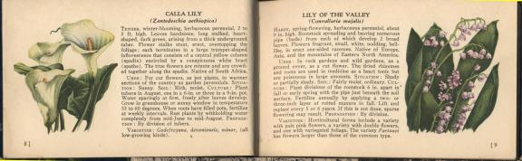

Thursday, June the 16th, 2005
back to: title, date or indexes
After breakfast, I did a quick set of Blötzmann Exercises (Second Handbook), and then I hoisted my rucksack on to my back and strode manfully off to the countryside to look at all the Blumen. The lake next to the decoy airfield was full of decoy ducks. For the first time I noticed a shabby clapboard hut which, according to a sign on its roof, was selling items of stationery at bargain prices. I strode manfully across the verdant meadows, stepping on innumerable Blumen as I went, and pushed my way into the tenebrous interior of the hut, wherein sat a crone sharpening a pencil.
“Hail, crone!” I cried.
“Hail, wayfaring rucksack-person!” yelled the crone, deafeningly. I was disconcerted. From her withered old body, festooned in noisome rags, piped the voice of a youngster. I wondered, with a start, if my manful strides had led me inadvertently into the spooky Land of Gaar, reputed to be teeming with imps and sprites, spider gods and changelings, and with things that should not be. But I had faced peril before, and I had eaten a large breakfast. Quick thinking has always been my trademark, so I nipped out of the hut and uprooted a fistful of calla lilies to give to the crone. If she was a malevolent being from a parallel universe the Blumen would appease her, and if she was but a crone, there would be no harm done.
“Hail once more, crone!” I declaimed, skipping back into the hut, “Here, have these calla lilies to brighten up your hovel!”
The crone accepted my gift graciously. As she reached, creakily, to take the Blumen, a slight disarrangement of her rags revealed the source of her arrestingly youthful voice. Wires trailed from her sleeve, and following their path across the floor I saw that she was attached to a Standard Curpin Voicebox. Mischievously, I turned the dial to the “US Vice Presidents” setting, so when next the crone spoke she would sound exactly like Spiro Agnew*.
I was about to ask the price of pencil sharpeners when a shelduck waddled into the hut. At least, I thought it was a shelduck. It may have been a teal. Its arrival sent the crone into a frenzy of terror. I had to turn down the volume on the Voicebox, so loudly did she scream. The teal or shelduck glared at her with uncanny purple eyes, and she carried on screaming.
There was little I could do. My training never prepared me to deal with terrifying ducks. Not that I was scared of the teal or shelduck myself, you understand. I fear nothing any more, not even those recurring nightmares I have about buttons, for I have been following Blötzmann's Second Handbook for five years. That is why I am able to stride manfully about the countryside trampling on Blumen without a care in the world.
I picked up a pencil sharpener and placed a handful of coins in its place. The crone still screamed, the duck still stared. I left the hut, and was blinded by the sun, bathing the fields in an unearthly light. As I approached Gruesome Ditch, and my eyes adjusted, I saw that all the Blumen had vanished without trace. And no birds did sing.

*NOTE : It has not escaped my attention that Spiro Agnew is an anagram of both Grow A Penis and Grow A Spine.
Hooting Yard on the Air, June the 22nd, 2005 : “Sieves and Basins” (starts around 09:41)
Hooting Yard on the Air, October the 4th, 2006 : “"How To..." With Fatima Gilliblat” (starts around 14:50)
Hooting Yard on the Air, June the 26th, 2014 : “Tiny Enid Extinguishes a Volcano” (starts around 19:27)